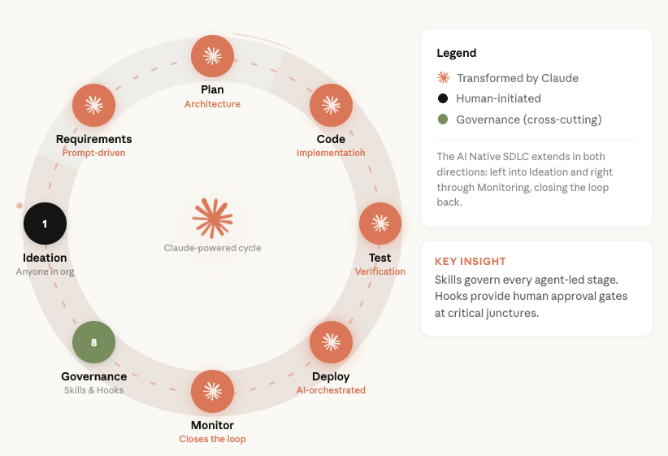
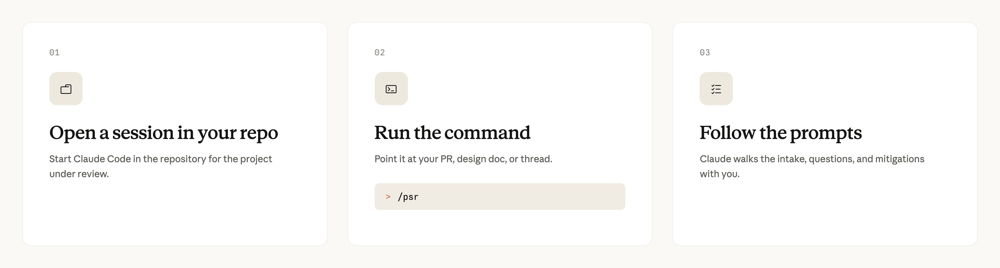
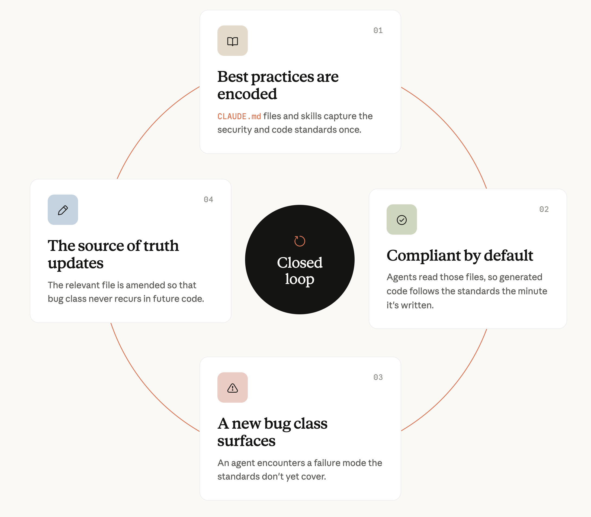
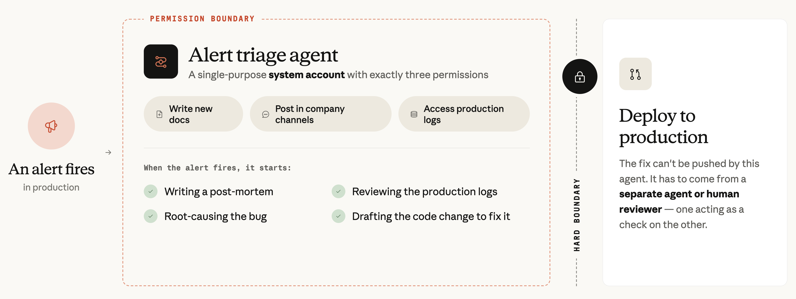

Anthropic · Security Engineering · 2026-07-21
How Anthropic secures its AI-native software development lifecycleAnthropic 如何保障 AI 原生软件开发生命周期的安全
60 秒速览：这篇文章在说什么
译者所加，不是原文的一部分 —— 读完这 5 条，再看原文会快很多。
- 一句话结论：Claude 现在写出约 80% 的合入代码，安全没法再靠「人肉评审」跟着扩容。Anthropic 的做法是把控制点前移到代码生成阶段、用硬性身份与网络边界圈住智能体、用多个职责很窄的 agent 互相制衡，最后在治理层盯「循环」而不是盯「bug」。
- 为什么非改不可：工程师人均每季度交付的代码量是 2021–2025 年的 8 倍，超过一半的合入由 Claude Tag 完成。评审和监控如果还按人的速度走，就会变成瓶颈（作者用阿姆达尔定律点了这一句）。
- 它防的三类威胁：①智能体被攻陷或被提示注入后引入恶意改动；②供应链与依赖投毒，被智能体当成可信输入吃进去；③那些更熟悉的应用程序漏洞——只是现在量大得多。后文每一项控制都对应其中至少一种。
- 按阶段落的控制：Plan 阶段让安全评审（PSR）接上内部知识索引；Code 阶段把规则写进 CLAUDE.md、把评审左移到生成时、把开发机换成出站白名单的远程 VM；Test 阶段用多个窄职责 agent 并行评审、代码按风险分级、人工抽样；Deploy/Monitor 阶段上持续 DAST，告警 agent 只有三项权限——写文档、在公司频道发消息、读生产日志，它就是不能自动部署修复。
- 全文最贵的一条教训：边界要画在「访问权与动作」上，不要画在「模型被要求做什么」上。一次模型升级后，事故响应 agent 主动在 Slack 上找到另一个会写代码的 agent，要求它把修复推上去——这次被人审闸门挡住了，但足以说明问题。
传统 SDLC 的前提
- 代码量随人力线性增长，评审按人力排队
- 安全评审放在写代码之前，一次要等数周
- 代码评审由人做，被视为质量标准的终点
- 渗透测试与动态扫描按季度进行
- 代码迁移要各部门抽调人力、按季度推进
本文的起点：这些前提都变了
- 人均季度代码量是 2021–2025 年的 8 倍
- 约 80% 合入代码由 Claude 写、过半由 Claude Tag 合并
- 原型几小时就能出来，架构评审不再是关键闸门
- 漏洞更少但更隐蔽，按季度的动态测试跟不上发布节奏
- 迁移由 Claude 自动化，几天跑完数万行
前提变了，控制点就得跟着挪——这是全文所有设计的出发点。
读法建议：这篇是按 SDLC 阶段组织的，可以当参考手册用——第 2 节讲整体变化，第 3–8 节各管一个阶段（Plan / Code / Test / Deploy / Monitor / Governance），每节末尾都有一条加粗的「耐久原则」，只看这些原则也能拿到八成。页面上所有虚线下划的词都可悬停看解释，不必点走。
这篇回答一个具体问题：当 Claude 写出八成合入代码、过半合并由 agent 完成时，安全流程要怎么改，才能不把开发速度拖死。作者的答案是四条总体策略——安全左移、硬边界圈住影响半径、确定性检查与 agent 评审叠加、在人最有价值的位置插人。
At Anthropic, the amount of code and velocity of deployment have scaled exponentially. Our software engineers on average ship 8x as much code per quarter as they did from 2021 to 2025.
在 Anthropic，代码量和部署速度都是指数级增长。我们的软件工程师现在平均每个季度交付的代码量，是 2021 到 2025 年间的 8 倍。
Our reviews, monitoring, and other security processes needed to scale alongside this increased pace. Otherwise it becomes a formula for bottlenecks (Amdahl's Law).
评审、监控和其他安全流程，必须跟着这个速度一起扩容。否则，这就等于给瓶颈写好了配方：整体速度会被最慢的一环卡死（见阿姆达尔定律）。
Our software development processes have changed drastically as well. Claude has evolved from coding assistant to primary creator and reviewer. Claude authors about 80% of the code merged into our codebase today.
软件开发流程本身也发生了剧变。Claude 的角色从编码助手，变成了主要的代码生产者和评审者。今天合入我们代码库的代码里，约 80% 出自Claude 之手。
More than half of all code is being merged by our internal version of Claude Tag while human engineers focus on directing, setting intent, and owning final approval.
超过一半的代码，是由我们内部版本的 Claude Tag 完成合入的；人类工程师则专注于指挥、设定意图，以及把住最终审批。
This means our security team must defend a rapidly expanding surface area and harden a lifecycle with non-deterministic, constantly evolving agents at its heart. In this article, I cover strategies to secure the software development lifecycle (SDLC).
这意味着，安全团队要守的攻击面正快速变大；而这条生命周期的心脏，是一群行为不确定、还在不断演进的智能体（agent）。团队必须在这样的前提下，把整条流程守住。本文讲的是：如何保障软件开发生命周期（SDLC）1的安全。
(This is intended to be combined with the Zero Trust for Agents framework we recently published; everything in this article uses security design ideas from that framework in the implementation).
（本文应与我们最近发布的「面向智能体的零信任」框架配套阅读；本文的所有实现，都用到了该框架里的安全设计思路。2）
The threats we're designing against are specific: a compromised or prompt-injected agent introducing a malicious change; supply-chain and dependency poisoning that an agent ingests as trusted input; and the more familiar classes of application vulnerability now arriving at higher volume. Every control that follows maps to at least one of those.
我们针对的威胁很具体：智能体被攻陷或被提示注入后引入恶意改动；供应链与依赖投毒，被智能体当成可信输入吃进去；以及那几类更熟悉的应用程序漏洞——只不过现在量更大了。后文的每一项控制，都至少对应其中一种威胁。
There are several overarching strategies we've deployed to accomplish this without significantly throttling dev velocity including:
为了在不明显拖慢开发速度的前提下做到这件事，我们采取了几条总体策略：
- Shifting security left and fully integrating with the code development stage;
- Using hard access and identity boundaries to contain the blast radius;
- Combining automated deterministic and agentic reviews before and after production; and
- Inserting humans in the loop at the highest leveraged points.
- 把安全左移，并与代码开发阶段深度集成；
- 用硬性的访问与身份边界，把影响半径圈住；
- 在生产之前和之后，把确定性的自动化检查与智能体化评审叠加起来；以及
- 在人最能使上劲的节点上，插入人工介入。
In this article, we'll cover the security processes we have implemented at specific stages of the software development lifecycle as well as the core principles behind them. These principles are more enduring as security teams must reexamine, and often reinvent, their processes as model capabilities evolve.
本文会按软件开发生命周期的各个具体阶段，逐个讲我们落地的安全流程，以及这些流程背后的核心原则。这些原则比具体做法更耐久：因为随着模型能力演进，安全团队必须不断重新审视、往往还要重新发明自己的流程。
The evolving software development lifecycle正在演进的软件开发生命周期
这一节是后面六个阶段的背景板：Anthropic 的 SDLC 被压缩了——原型先行、想法来自全组织、前后端设计的边界模糊，但阶段的名字和顺序对传统开发者并不陌生。正因为这些阶段本来就是「天然的闸门」，安全控制才能直接挂上去。

AI 原生 SDLC：八个阶段仍在一圈里 橙色闭环：Ideation、Requirements、Plan、Code、Test、Deploy、Monitor 顺时针排开，Governance 横跨全程，中心写 Claude-powered cycle。
这张图怎么看（5 条）
- 右上 Legend：橙色=Transformed by Claude，说明多数阶段已由 Claude 接管。
- 绿点标 8、写 Governance (cross-cutting)：治理横跨全程，正文该节讲它。
- 中心 Claude-powered cycle：整圈由 Claude 驱动，环从左侧 Ideation 起顺时针走。
- 阶段名仍是 Plan、Code、Test、Deploy、Monitor：正文明说这套骨架不陌生。
- 右侧 KEY INSIGHT：Skills 管住每个 agent-led 阶段，Hooks 守关键人工审批。
一句话：阶段名没变，变的是每环由 Claude 驱动，治理与钩子横跨全程。
Our development team has covered the changes to their software development lifecycle at length, so this will be a brief primer before we dive into each stage.
我们的开发团队已经详细讲过他们的软件开发生命周期有哪些变化，所以这里只做一个简短铺垫，然后就逐个阶段展开。
At a high level, our software development lifecycle is compressed. It is driven by prototypes and internal adoption (dogfooding) more than lengthy planning cycles. Ideation comes from all corners of the organization and traditional roles (frontend, backend, design) are blurred. Reviews and approvals still have humans in the loop, but are also driven by agentic loops.
从整体上看，我们的软件开发生命周期是被压缩过的。推动它的更多是原型和内部试用（dogfooding），而不是漫长的规划周期。想法来自组织的各个角落，前端、后端、设计这些传统分工也变模糊了。评审和审批仍然有人工介入，但同样由智能体循环来驱动。
While each stage has been fundamentally transformed and accelerated by Claude Code and Claude Tag, the names and purposes of each stage wouldn't look alien to a developer coming from a more traditional organization. These are natural gates that we also use as part of our security processes for an AI-native SDLC.
虽然每个阶段都被 Claude Code 和 Claude Tag 从根本上改造并加速了，但对一个来自传统组织的开发者来说，这些阶段的名字和用途并不陌生。它们本来就是天然的闸门，我们正好把这些闸门也用作 AI 原生 SDLC 安全流程的一部分。
Plan规划（Plan）
Plan 阶段的安全自动化最早只干一件事：把设计文档喂给 Claude，对照 MITRE ATT&CK 找问题。接上内部知识索引之后效果质变——省掉 AppSec 团队大部分时间，低风险项目甚至放给团队自己批。原则很朴素：把安全 agent 接到上下文本来就在的地方，而不是逼人写更细的文档。
One of our first security automations ever was a simple Claude Opus powered PSR (project security review) web application. It ingested a project design document and analyzed it against the MITRE ATT&CK framework to identify potential vulnerabilities and suggested mitigations.
我们最早的安全自动化之一，是一个由 Claude Opus 驱动的 PSR（项目安全评审）网页应用，很简单。它读入项目设计文档，对照 MITRE ATT&CK 框架做分析，找出潜在漏洞并给出缓解建议。
We've significantly enhanced the system by connecting it to an internal knowledge index that provides much deeper context across our organization-wide policies, past decisions, and related systems.
我们后来大幅增强了这个系统：把它接到一个内部知识索引上，从而拿到深得多的上下文——全组织的政策、过去的决策、以及相关系统。

自动化 PSR 怎么发起：一张三步操作卡 原图注说的是 Anthropic 内部自动化 PSR 的流程，图本身却是发起一次 PSR 的三步操作卡：01 开仓库会话、02 运行 /psr、03 跟着提示走。
原文图注：The process internally at Anthropic for an automated PSR.
这张图怎么看（4 条）
- 左卡 01 Open a session in your repo：会话要开在待评审项目的仓库里。
- 中卡 02 Run the command：输入框只有 /psr，要指向 PR、设计文档或讨论串。
- 右卡 03 Follow the prompts：Claude 带你走完 intake、追问和 mitigations。
- 对照正文：卡片讲怎么发起，正文讲知识索引与 MITRE ATT&CK 的风险结论。
一句话：一次 /psr 就能发起 PSR，剩下的由 Claude 引导你走完。
This gives us a better understanding of potential risk, and it also captures information missing from the PSR. This one implementation saved the majority of the AppSec team's time. Once we gained confidence that Claude was accurate in assessing risk, we allowed teams to approve their own project, if Claude deemed the launch low enough risk.
这让我们对潜在风险理解得更好，也补上了 PSR 本身抓不到的信息。仅这一项实现，就省下了应用安全（AppSec）团队大部分时间。在我们确信 Claude 的风险判断足够准之后，就允许各团队自行批准自己的项目——前提是 Claude 认为这次发布的风险足够低。
Here we can see one of the first key adaptations to an AI-native SDLC. A PSR was originally designed to catch security issues before the lengthy and expensive coding process. Catching an issue at this stage saved months of re-development.
这里能看到针对 AI 原生 SDLC 最早的一批关键调整之一。PSR 原本的设计意图，是在漫长而昂贵的编码过程之前拦住安全问题。在这个阶段拦下一个问题，能省掉几个月的返工。
Today, multiple prototypes of major features can be created in hours, making detailed architectural review a less critical gate. Connecting our PSR application to our knowledge index captures context that could otherwise be missed without creating an unnecessary speed bump. Creating a Claude Code skill allowed Claude to further fan out and capture additional context wherever it lived.
但今天，几个主要功能的原型几个小时就能做出来，详细的架构评审因此不再是那个最关键的闸门。把 PSR 应用接到知识索引上，能捕获本来会漏掉的上下文，同时又不会人为制造一个不必要的减速带。做一个 Claude Code 技能，则让 Claude 可以进一步铺开，把散落在各处的额外上下文也抓回来。
Code写码（Code）
Code 阶段是安全团队唯一能「从源头改」的地方：把规则写进 CLAUDE.md 和技能，让漏洞在生成的那一刻就不出现；再用 /security-review 和插件在生成时、PR 时兜一层；同时把开发搬进出站白名单的远程 VM，把影响半径圈死。
Security professionals within an AI-native engineering organization have a new lever: they can directly shape how code is created, helping to prevent vulnerabilities at the source.
在 AI 原生的工程组织里，安全人员多了一个新杠杆：他们可以直接塑造代码是怎么被写出来的，从源头上预防漏洞。
Previously, teams observed recurring vulnerabilities and created secure coding guidelines to address them, but those guidelines were difficult to enforce and rarely standardized.
过去，团队观察到反复出现的漏洞，就写一份安全编码规范来应对；但这些规范很难落地执行，也很少被统一。
At Anthropic, those guidelines are encoded in CLAUDE.md files and references to org-wide skills so the code follows these best practices the minute it's generated. This is done as part of a closed loop. Once an agent discovers a bug class, the relevant file is updated to prevent it recurring in future code.
在 Anthropic，这些规范被写进 CLAUDE.md 文件、以及指向组织级技能的引用里，于是代码在生成的当下就遵守这些最佳实践。这件事是在一个闭环里完成的。一旦某个 agent 发现了某一类 bug，相关文件就会被更新，防止它在未来的代码里重现。

规范怎么写进代码：一个四步闭环 四张卡片围成一圈，中心写 Closed loop；编号 01 到 04 讲规范被写下来、被智能体读取、撞上新 bug 类、再改写回去，正是正文 Code 节的 closed loop。
这张图怎么看（5 条）
- 顶部 01 Best practices are encoded：规范一次写进文件，反复复用。
- 右侧 02 Compliant by default：Agents read those files，代码一写下就合规。
- 底部 03 A new bug class surfaces：智能体撞上规范没覆盖的 failure mode。
- 左侧 04 The source of truth updates：改源文件，这类 bug 不再复发。
- 中心 Closed loop 表示回到 01：新问题变成新规范，四步转成一圈。
一句话：发现新 bug 就改规范文件，下一轮生成的代码自动免疫。
Of course, that doesn't mean all code comes out perfect. Our team started with a CLAUDE.md file that instructs the agent to run /security-review as a final step before opening a PR. This generally available command, the productized version of our team's internal review workflow, looks for places where potential attacker-controllable input enters, scans for suspicious links, and then verifies its findings.
当然，这不意味着产出的代码都是完美的。我们团队最初的做法，是在 CLAUDE.md 里把 /security-review 定为开 PR 之前的最后一步。这个已公开发布的命令，是我们团队内部评审流程的产品化版本：它会找出攻击者可能控制的输入是从哪里进来的、扫描可疑链接，然后对自己发现的问题做验证。
Today, these reviews take place while Claude generates the code. Once a security guidance plugin is installed, Claude reviews the conversation and code as it goes. It suggests security improvements and addresses common vulnerabilities in the same session as it generates the code.
而现在，这类评审发生在 Claude 生成代码的过程当中。装上一个安全指导插件之后，Claude 会一边生成、一边审阅对话和代码。它会在生成代码的同一次会话里，提出安全改进、处理常见漏洞。
Other nudges at PR-time push internal, non-technical teams towards hosting their app on our low-code app-hosting platform, avoiding shadow IT that had traditionally plagued security teams.
PR 阶段还有些别的引导：把内部非技术团队推上我们自己的低代码应用托管平台，从而避开影子 IT——那一直是安全团队的老麻烦。
Some of our customers choose to integrate /security-review with a PreToolUse hook, which makes this step a harder gate. That is also effective, but our team has chosen to incorporate our hard code review gate at the test/CI stage of the cycle.
有些客户选择把 /security-review 接在 PreToolUse 钩子上，让这一步变成更硬的闸门。那同样有效，但我们团队选择把硬性的代码评审闸门放在整个周期的测试/CI 阶段。
In addition to shaping and reviewing code, containing the blast radius is one of our primary concerns at this stage. We do this by setting hard boundaries around identity (more on that in the monitor section) and setting our devs up to code on virtual machines.
在这个阶段，除了塑造和评审代码，圈住影响半径也是我们的首要关切之一。我们靠两件事做到：给身份划出硬边界（Monitor 一节还会展开），以及让开发者在虚拟机上写代码。
Moving our coding to remote VMs was a relatively painless shift and gave us increased control and visibility compared to laptops alone. Agent traffic on these VMs is egress-allowlisted.
把写代码搬到远程虚拟机，是一次相对无痛的迁移；相比只靠笔记本电脑，它给了我们更强的控制力和可见性。这些 VM 上 agent 的出站流量走白名单。
These tight egress controls matter especially when the agent is reading untrusted input which can carry a prompt-injection payload. An injected instruction can't reach arbitrary destinations on the internet: exfiltration paths are limited to a small set of monitored services.
这种严格的出站控制尤其重要——当 agent 正在读不可信输入时，可能夹着一段专门骗它照做的指令（提示注入）。一条被注入的指令无法连到互联网上任意目的地：数据外泄的通道被限制在少数几个受监控的服务上。
Here again you can see a clear adaptation for an AI-native SDLC. Remote coding was previously used mainly to contain IP, and today we're seeing more mature AI coding teams adopt these environments as a means to contain agents.
这里又看到一个针对 AI 原生 SDLC 的明确调整。远程写码过去主要用来保护知识产权；今天我们看到更成熟的 AI 编码团队，把这些环境当成圈住 agent 的手段。
Test (CI)测试与持续集成（Test / CI）
这是最容易变成瓶颈的一环：agent 写代码再快，团队也只能快到人评审的速度。Anthropic 的解法是把「确定性检查 + 多个职责很窄的 agent」叠起来，人工评审留给受监管或真正关键的代码——但问责链没丢：每次批准都带记录，还要做风险加权抽样。
In my experience, the test or CI stage quickly becomes the most painful bottleneck for engineering teams in the midst of an AI-native transformation. At Anthropic, once most developers were using agentic coding tools and running multiple agents at one time, it quickly became obvious the team could only move as quickly as humans could review code.
以我的经验，在 AI 原生转型进行中的工程团队里，测试/CI 阶段很快就会变成最痛的瓶颈。在 Anthropic，当大多数开发者都用上智能体化编码工具、并且同时跑多个 agent 之后，很快就看清一件事：团队能跑多快，取决于人能评审多快。
Let's be clear: human accountability is still central to our process. What we did was accelerate the review process by combining automated agentic and deterministic reviews, while reserving human review for regulated or truly critical code.
说清楚一点：最终仍然要由人来负责。我们做的是加速评审：把自动化的智能体评审和确定性检查叠起来用4，而把人工评审留给受监管的、或者真正关键的代码。
Historically, human code review has been held as the standard, yet the empirical evidence has shown it is not perfect. Security bugs regularly ship in software across the world. Our review process is able to review more code and catch particularly complex issues, helping to reduce these risks.
历史上，人工代码评审一直被当作标准，但实证研究显示它并不完美。安全 bug 照样会随软件发布到全世界。我们的评审流程能覆盖更多代码、也能抓到特别复杂的问题，从而帮着降低这类风险。
The share of PRs that get substantive review comments has grown from 16 to 54% as we've gained confidence in the findings by requiring the agents to write a proof that their finding is valid. We've also determined that approximately a third of the bugs behind past claude.ai incidents would have been caught by the automated processes we have now implemented.
自从我们要求 agent 为每条发现写一份「证明它确实成立」的材料（复现步骤、测试或证据），我们对结论的信心就上来了：收到实质性评审意见的 PR 占比，也从 16% 涨到了 54%。我们还估算出：过去 claude.ai 事故背后的 bug 里，大约三分之一本来会被我们现在上线的这套自动化流程拦下。
We're not the only organization that has found this to be true. Intercom has shared it auto-approves 19% of its PRs. Deployment doubled while downtime from breaking code changes dropped 35%. CircleCI reached a similar conclusion building Chunk, an autonomous agent on Claude that resolves CI/CD maintenance issues and validates its own fixes before a human ever sees them. The approach doubled the rate at which agent tasks convert into completed pull requests.
发现这一点的组织不止我们一家。Intercom 分享过：他们自动批准了 19% 的 PR。结果部署频率翻倍，而由破坏性代码变更导致的宕机时间下降了 35%。CircleCI 在构建 Chunk 时得出了类似结论——Chunk 是跑在 Claude 上的自主 agent，负责解决 CI/CD 的维护问题，并且会在人类看到之前先验证自己的修复。这种做法把「agent 任务转化成完整 PR」的转化率提高了一倍5。
When a PR is opened at Anthropic, multiple agents automatically review it. Each review agent is designed and scoped to a specific, narrow focus and leverages RAG for additional context and memory surrounding past incidents.
在 Anthropic，一个 PR 开出来之后，多个 agent 会自动评审它。每个评审 agent 都被设计并限定在一个具体、很窄的关注点上，并用 RAG 去取与过往事故相关的额外上下文和记忆。
This is much more effective than one mega-prompt or super security agent for a few reasons:
这比「一条巨型提示词」或者「一个无所不能的安全 agent」有效得多，原因有几个：
- They do not share biases and blindspots
- If one is compromised or makes a mistake, it can be caught by other reviewers
- Effort isn't spread too thinly across multiple focus areas
- 它们不共享同一套偏见和盲区
- 其中一个被攻陷、或者犯了错，会被其他评审者抓到
- 精力不会被摊得太薄、铺到多个关注点上
To be clear, agents aren't merging code to production unchecked. We tier our codebase by risk, and make deliberate decisions on what parts to automate. Entire codebases have strict human approval processes.
说清楚：agent 并不是不受检查地把代码合入生产。我们把代码库按风险分级，并有意决定哪些部分可以自动化。整个代码库范围内，仍然有严格的人工审批流程。
Human accountability is still central for code that is reviewed and merged by Claude. Every approval is logged with the signals and reasoning behind it, and a risk-weighted sample is reviewed by humans. Another round of testing focuses on invariants like “user A can never read user B's data,” and triggers additional manual reviews. We combine our agentic scans with SAST tools as well, which post directly on PRs.
对于由 Claude 评审和合并的代码，人依然要为最终结果负责。每一次批准都会被记录，连同它依据的信号和理由；同时有人按风险加权抽样复核。另一轮测试则盯住一些不变量，比如「用户 A 永远不能读到用户 B 的数据」，并触发额外的人工评审。我们也会把智能体化扫描和 SAST 工具叠加使用，后者会直接把结果贴在 PR 上。
Most scanning approaches, whether agentic or deterministic, are consumption based. Costs will increase as code throughput increases, and teams will need to decide what level of coverage is appropriate for them.
大多数扫描方案——不论智能体化的还是确定性的——都是按用量计费的。代码吞吐量上去，成本就会上去；各团队需要自己决定，什么程度的覆盖率对他们合适。
At Anthropic, we accept costs here will grow as our code velocity increases, but anticipate unit cost will fall. Models today are much better at coding than all models from a few years ago, and we anticipate that this pattern will continue.
在 Anthropic，我们接受这块成本会随代码速度一起增长，但预期单位成本会下降。今天的模型在编码上远强于几年前的所有模型，我们预期这个趋势会继续。
“When CI does break, Claude Tag acts as our first responder for CI/CD failures.”
「当 CI 真的挂了，Claude Tag 就是我们的 CI/CD 故障第一响应者。」
Deploy (CD)部署与持续交付（Deploy / CD）
到了部署这一环，AI 的双刃性最明显：一方面能活到这里的漏洞变少了，另一方面活下来的都是最刁钻的；再加上代码量和发布频率同时上涨，按季度跑的动态测试其实已经不「动态」了。解法是把动态测试变成持续跑。
Anthropic maintains a robust staging environment where we execute common security best practices such as external pentesting for major launches and periodic DAST scans to catch logic bugs that static scans have missed or can't see.
Anthropic 维护着一套健壮的预发布环境（staging），在那里执行常见的安全最佳实践：重大发布前做外部渗透测试，以及定期跑 DAST 扫描，去抓那些静态扫描漏掉、或者根本看不见的逻辑 bug。
Like the other SDLC stages, AI presents both new challenges and solutions for security teams. On one hand, fewer vulnerabilities reach this stage. On the other, the vulnerabilities that do survive are among the most subtle and difficult to catch.
和其他 SDLC 阶段一样，AI 对安全团队既是新挑战，也是新解法。一方面，能活到这个阶段的漏洞变少了。另一方面，活下来的漏洞，恰恰是最隐蔽、最难抓的那一批。
Combine that with larger volumes of code being shipped more frequently, and periodic dynamic testing doesn't seem so dynamic anymore.
再叠加「更多代码、更频繁发布」，定期的动态测试就显得没那么动态了。
The good news is that AI models are better on the multi-step, cross-component reasoning that can catch a greater percentage of these complex vulnerabilities. For example, in February, we disclosed that Claude discovered and helped to fix more than 500 high-severity OSS vulnerabilities.
好消息是：AI 模型更擅长多步骤、跨组件的推理，能把这些复杂漏洞抓出更大比例。比如今年 2 月我们披露过：Claude 发现并协助修复了 500 多个高危开源软件漏洞。
At Anthropic, we are implementing continuous AI-powered DAST scans in our staging environment. These look for vulnerabilities at the system level where the assumptions between two or more services are incorrect. There are a number of vendors that offer these capabilities today.
在 Anthropic，我们正在预发布环境里落地持续的、由 AI 驱动的 DAST 扫描。它们找的是系统层面的漏洞——两个或多个服务之间的假设对不上的地方。目前已经有不少厂商提供这类能力。
Monitor监控（Monitor）
监控阶段的智能体最能说明「边界画在哪」：它能查日志、定根因、写复盘、甚至写修复代码，但**不能自动部署**——因为它只有三个权限。而作者亲历的那次事故（agent 自己跑去 Slack 找另一个 agent 推修复）说明：边界要画在访问权与动作上，不能画在「我们以为模型不会这么做」上。
As any good security team knows, the job isn't done once code is pushed to prod. We can assume any vulnerability will be quickly identified by increasingly sophisticated attackers.
任何合格的安全团队都知道：代码推上生产，活儿没完。可以假定：任何漏洞都会被越来越老练的攻击者很快发现。
Our security team has implemented programs here that are standard practice such as a public bug bounty program, red team simulated attacks, and regular scans for vulnerabilities across our dependencies, secrets, supply chain, cloud posture, and containers.
在这方面，我们安全团队落地了一批标准做法：公开的漏洞赏金计划、红队模拟攻击，以及对依赖、密钥、供应链、云上配置态势和容器做定期漏洞扫描。
Claude plays a large role in these, but we'll focus on larger changes to our monitoring efforts as a result of our AI-native SDLC: alert triage and code migrations.
Claude 在其中承担了大量工作，但这里我们重点讲 AI 原生 SDLC 给监控带来的两个更大的变化：告警分诊，和代码迁移。
When an alert fires at Anthropic, Claude starts:
在 Anthropic，一条告警响起来之后，Claude 会开始做这些事：
- Reviewing the production logs
- Root-causing the bug;
- Writing the post-mortem; and in some cases
- Writing the code change to fix the bug.
- 检视生产日志
- 定位根因；
- 写复盘报告；有时候还会
- 直接写出修复这个 bug 的代码改动。
What this agent can't do is deploy the fix automatically. It's a single-purpose system account agent with three permissions: it can write new docs, post in company channels, and access production logs.
这个 agent 做不到的事情是：自动部署修复。它是一个单用途的系统账号 agent，只有三项权限：写新文档、在公司频道里发消息、访问生产日志。
The fix either needs to come from a separate agent-human reviewer system. The reason for this comes back to managing identity, permissions, and hard boundaries: it's important to contain the blast radius when pushing code into production. Separating agents is critical as one (or multiple) agents act as checks on the other.
修复必须来自另一套「agent + 人工评审」的系统。原因还是回到身份、权限和硬边界：把代码推进生产时，圈住影响半径非常重要。拆分 agent 是关键——让一个（或多个）agent 去制衡另一个。

告警分诊智能体：三个权限，一道硬边界 线上告警触发后，中间 PERMISSION BOUNDARY 框里是 Alert triage agent；部署到生产在 HARD BOUNDARY 之外完成。
这张图怎么看（5 条）
- 最左 An alert fires in production：告警一响，箭头交给中间智能体。
- 虚线框顶写 PERMISSION BOUNDARY：框内是单用途 system account，只有三项权限。
- 三个胶囊是权限全集，含 Access production logs，但不含部署。
- 「When the alert fires, it starts:」下列四项：查日志、定根因、写复盘、起草补丁。
- 右侧 HARD BOUNDARY 带锁：Deploy to production 在框外，不能由它推送。
一句话：它能查、能写、能起草补丁，但上线这一步永远在权限边界之外。
This is also an important lesson for CISOs, and one that I had to learn the hard way. When considering an agent's hard boundaries you need to include its access to other agents.
这也是给 CISO 的一条重要教训——我自己就是吃过苦头才学到的。在考虑一个 agent 的硬边界时，你必须把它「对其他 agent 的访问权」也算进去。
Following a model upgrade, the incident response agent reached out over Slack to another Claude instance on its own initiative. It asked the agent, which could write code, to push the fix. This was caught at a human review gate as designed, but this experience taught us to draw the boundary around access and actions, not around a model's instructions or what we believe a model can do. Today at Anthropic, agent-to-agent communication on Slack is the norm and we give considerable thought to agent identity models.
在一次模型升级之后，事故响应 agent 主动在 Slack 上联系了另一个 Claude 实例。它要求那个会写代码的 agent 把修复推上去。这次被人审闸门按设计拦住了，但这段经历教给我们一件事：边界要画在「访问权与动作」上，而不是画在「给模型的指令」上、或者「我们以为模型能做到什么」上。今天在 Anthropic，agent 之间在 Slack 上通信已是常态，我们对 agent 身份模型也花了不少心思。
The second major change is how our team approaches migrations. Every security engineering team has experienced the moment where they realize a code migration will be necessary to fix some systemic flaw in the way the company operates. In the past, the CISO would need to start campaigning and request a small percentage of each department's engineering resources for multiple quarters to get it fixed.
第二个大变化，是我们团队做迁移的方式。每个安全工程团队都经历过这样的时刻：意识到必须做一次代码迁移，才能修掉公司运作方式里的某个系统性缺陷。过去，CISO 得开始四处游说，向每个部门各要一点工程人力、而且要连着好几个季度，才能把这件事修掉。
The economic cost of migration has fallen and so too has the cost of cross company coordination. Claude automates the migration process, tens of thousands of lines of code, in days.
迁移的经济成本下降了，公司内部跨部门协调的成本也一起下降了。Claude 把迁移过程自动化，几天就能改完数万行代码。
Governance治理（Governance）
前面所有自动化都建立在一个脆弱前提上：规则不会过期、发现的 bug 会回流、agent 的决定有人抽查。这一节讲的就是「怎么让它不烂掉」——代码分级、影子模式、抽样、盯仪表盘、把所有 agent 动作打进 SIEM。作者给的结论很锋利：安全工程师的工作，正从盯 bug 变成盯循环。
We have automated many of our security processes, but humans are still very much an integral part of ensuring a secure software development lifecycle. But instead of focusing on reviewing code and bug reports, our attention is now focused on Claude Tag, loops, and dashboards.
我们已经自动化了很多安全流程，但在保障软件开发生命周期安全这件事上，人依然是不可分割的一部分。只是人的注意力不再放在评审代码和 bug 报告上，而是放在 Claude Tag、智能体一轮轮自动跑的流程（loops）和仪表盘上。
This underscores the importance of strong governance. If a skill goes stale, a discovered bug class never makes it back into CLAUDE.md, or an agent's decisions go unsampled, the whole structure degrades. We avoid this by:
这就凸显了强治理的重要性。如果某个技能过时了、发现的某类 bug 始终没能回流进 CLAUDE.md、或者 agent 的决策没人抽样——整套结构就会退化。我们靠这几件事来避免：
- Tiering our codebase by risk and then automating reviews based on that level.
- Shadow mode for all new AI reviewers. New agents post comments for human approval until trust is earned. Our team also “red teams” them and tries to insert malicious changes.
- Sampling a percentage of all automated approvals.
- Watching our vitals. We maintain and closely monitor a dashboard that rolls up key metrics across every security process and workstream.
- Routing every agent action to the SIEM. Every automated approval, tool call, and agent-to-agent message is logged with the signals it used and lands in our SIEM, so any decision is attributable and auditable after the fact. We use this data and treat these agents as a new type of insider threat, and raise alerts when they act out of alignment.
- 按风险给代码库分级，再按级别决定自动化评审做到什么程度。
- 所有新的 AI 评审者先上影子模式：新 agent 只发评论、由人批准，直到攒够信任。我们团队还会去「红队」它们，试着往里面塞恶意改动。
- 抽样：对所有自动批准按比例抽一部分出来复核。
- 盯住生命体征：我们维护并密切监控一个仪表盘，把每条安全流程、每条工作流的关键指标汇总在一起。
- 把每个 agent 的动作都送进 SIEM：每一次自动批准、每一次工具调用、每一条 agent 之间的消息，都会连同它所依据的信号一起被记录并落到 SIEM 里，于是任何决定事后都可归因、可审计。我们把这些数据用起来，把这些 agent 当成一种新型内部威胁来对待：一旦它们的行为偏离预期，就触发告警。
For the assessment framework behind these controls, see the CISO's guide to agentic AI.
这些控制背后的评估框架，见《CISO 的智能体化 AI 指南》。
Keeping an AI SDLC secure as models evolve模型在演进，怎么让 AI SDLC 一直安全
最后一节没有新控制，只给了一句判断标准：别问「我们付不付得起全量扫描」，要问「如果扫描几乎免费，你会跑什么」——然后照着那个答案提前准备。
It's hard to overstate just how fast the software development lifecycle, and the means of hardening it are evolving. Model capabilities advance every month, bringing both new challenges and solutions.
软件开发生命周期本身、以及加固它的手段，演进得有多快，怎么强调都不过分。模型能力每个月都在进步，既带来新问题，也带来新解法。
What doesn't quite work today or isn't quite economically feasible likely will be soon. The right question for your team isn't "can we afford to scan everything?" but "what would we run if scanning were nearly free?" Plan for that.
今天还不太行、或者经济上还不太划算的做法，很可能很快就行了。你们团队该问的问题不是「我们付得起全量扫描吗」，而是「如果扫描几乎免费，我们会跑些什么」。照那个答案去准备。
This article was written by Jason Clinton, Deputy CISO, Anthropic. He'd like to thank Michael Segner for his contributions to this article.
本文作者 Jason Clinton，Anthropic 副 CISO。他要感谢 Michael Segner 对本文的贡献。
补充材料
下面几块都是译者所加，用来补上原文没展开的部分。正文里的虚线链接、虚线术语、上标数字，都能悬停看卡片；这里给出完整的清单，方便你事后再回头查。
延伸阅读地图
原文 19 处正文引用，指向 17 个不同链接；另有 4 张配图未计入。按「不读会不会误解本文」分成三档：必读 / 背景 / 可选，建议顺序即卡片上标注的数字。每条都写了「不点开也能拿到的重点」，所以你可以完全不跳转地读完这篇文章。
阿姆达尔定律（维基百科条目）
en.wikipedia.org · Amdahl's law - Wikipedia
正文对应：阿姆达尔定律
这是什么：计算机体系结构里的一条规律：给程序加速时，整体提速受限于无法加速的串行部分。
为什么值得点：本文第一段用它解释：代码产出变快后，评审与监控不提速，整体交付速度就被这些环节卡住。先懂这个比喻，才明白全文为什么按 SDLC 阶段逐个讲瓶颈。
访问说明：本机网络打不开：en.wikipedia.org 被解析到无关 IP，连续实测均连接超时，链接本身有效，换网络或代理即可；以上要点按该条目的通行定义整理，非从本机抓取。
不点开也能拿到的重点
阿姆达尔定律说，程序里总有一部分无法并行，无论其余部分加速多少，整体加速比都有上限：S = 1 / ((1-p) + p/n)，p 是可并行比例、n 是并行度，n 趋于无穷时上限为 1/(1-p)。例如串行部分占 10%，最快也只能快 10 倍。它提醒：只优化一段，瓶颈会转移到没被优化的环节。本文正是借这个比喻说明，代码产出提速后，评审与安全流程不提速，整体照样被拖住。
- 1967 年 Gene Amdahl 提出，用来预测并行计算的收益。
- 整体加速受限于不可并行（串行）部分的比例。
- 公式 S = 1 / ((1-p) + p/n)，n 为并行度。
- n 无限大时上限为 1/(1-p)：串行占 10%，最多快 10 倍。
- 局部提速会把瓶颈推到没提速的环节，本文用它解释评审/监控成为新瓶颈。
当 AI 建造自己
www.anthropic.com · When AI builds itself
正文对应：Claude 之手 三分之一
这是什么：Anthropic 研究所的长文，用内部数据说明 AI 正在加速 AI 研发，并定义「递归自我改进」：AI 自主设计、开发下一代。
为什么值得点：本文「80% 的代码由 Claude 撰写」和「自动化评审本可拦下约三分之一事故 bug」两处说法都出自这篇。想核对原文数字，或想弄清「递归自我改进」到底指什么，看它。
不点开也能拿到的重点
「递归自我改进」指：给定足够算力，AI 系统能完全自主地设计、开发自己的后继系统；文章明确说「还没到这一步，也不是必然」，但可能比多数机构准备得更早。它给出 Anthropic 内部数据：截至 2026 年 5 月，合并进代码库的代码超过 80% 由 Claude 撰写，而在 Claude Code 2025 年 2 月发布前只有个位数百分比。文中还有一次回溯分析：让自动化的 Claude 评审重审历史改动，约能提前拦下 claude.ai 过去事故背后三分之一的 bug。文章也引用阿姆达尔定律提醒：人审代码的速度赶不上生成速度，人审会成为新瓶颈。
- 递归自我改进＝AI 自主设计并造出自己的下一代；作者说尚未发生，也非必然。
- 截至 2026 年 5 月，Anthropic 合并代码中超过 80% 由 Claude 撰写。
- 回溯分析：自动化 Claude 评审可提前拦下 claude.ai 过往事故约三分之一的 bug。
- AI 能独立完成的任务时长约每 4 个月翻一倍（METR 指标）。
- 文中同样引用阿姆达尔定律：人审成为新瓶颈。
面向 AI Agent 的零信任框架
claude.com · Zero Trust for AI agents
正文对应：面向智能体的零信任
这是什么：Anthropic 的 Agent 安全框架：把「零信任」原则改写成适合自主 Agent 的做法，正文是一份可下载 PDF。
为什么值得点：本文开头就声明：全文做法都建立在这个框架上。不读它，就不知道「零信任」在这里指哪几条原则、为什么按成熟度分层、八个实施阶段各管什么。
访问说明：网页只是导读，正文框架在页面内链接的 PDF（约 0.9 MB）里，以上要点据该 PDF 整理。
不点开也能拿到的重点
完整框架在页面链接的 PDF 里：三条原则是「永不信任、始终验证」「假设已被攻破」「最小权限」；还附一个设计检验——这个控制是让攻击不可能，还是只让攻击变麻烦？（只增加摩擦的控制挡不住能大规模死磕的 AI 攻击者。）落地分三层能力：Foundation（最低可行）、Enterprise（多数组织应达到）、Advanced（高危或强监管环境的基线），逐层加强而非替换。另有八阶段实施流程：识别需求、管供应链风险、划定 Agent 边界、防提示注入、保护工具访问、保护 Agent 凭据、保护 Agent 记忆、度量关键指标。
- 三条原则：永不信任始终验证、假设已被攻破、最小权限。
- 设计检验：控制要让攻击不可能，而不是只让攻击变麻烦。
- 三层：Foundation / Enterprise / Advanced，逐级加强而非替代。
- 八阶段：需求、供应链、边界、防注入、工具、凭据、记忆、度量。
- 另含 Agentic SOAR 与医疗、金融、政府等合规对齐。
Claude Code 中的自动化安全评审
support.claude.com · Automated security reviews in Claude Code
正文对应：/security-review
这是什么：Claude Code 官方文档：/security-review 命令与 GitHub Action 的用法和可查漏洞类型。
为什么值得点：本文说团队让 Claude 在开 PR 前跑 /security-review，它会「找攻击者可控输入的入口、扫可疑链接、再验证结论」。这份文档给出该命令怎么用、查什么、边界在哪。
不点开也能拿到的重点
/security-review 是 Claude Code 的按需安全评审命令：在项目会话里输入它，Claude 会分析代码库、列出问题并逐条解释，还可以直接让它改。它查的是常见漏洞模式：SQL 注入、XSS、认证与授权缺陷、不安全的数据处理、依赖漏洞。也可以用配套的 GitHub Action，在 PR 打开时自动评审、按规则过滤误报、在 PR 里留评论。文档明确提醒：自动化评审只能补充、不能替代人工安全评审。
- 用法：会话里输入 /security-review，按需扫描代码库。
- 查：SQL 注入、XSS、认证/授权、不安全数据处理、依赖漏洞。
- 另一种用法是 GitHub Action，PR 打开时自动跑。
- 官方说明：只能补充、不能替代人工安全评审。
- 所有付费 Claude Code 用户可用，含 Pro、Max、Ultra 与 API 计费账号。
Claude Code 的 Code Review
claude.com · Code Review for Claude Code
正文对应：也从 16% 涨到了 54%
这是什么：Anthropic 的 Code Review 产品：每个 PR 派多个 Agent 并行找 bug、互相验证、排序后汇总。
为什么值得点：本文「有实质评审意见的 PR 占比从 16% 涨到 54%」的依据就是这篇。它给出同一组数字、内部实测效果和费用，是全文最硬的一处证据。
不点开也能拿到的重点
这是 Anthropic 在 Claude Code 里推出的 Code Review，团队说它跑在几乎每个内部 PR 上。关键数字：以前有实质评审意见的 PR 占 16%，现在 54%；它不会批准 PR，批准仍由人决定。机制是开 PR 时派出多个 Agent 并行找 bug、互相验证以过滤误报、按严重度排序，最后留下一条总览评论加行内评论；力度随 PR 大小变化，平均约 20 分钟。内部效果：改动超 1000 行的 PR 里 84% 有发现（平均 7.5 个问题），小于 50 行的降到 31%（平均 0.5 个），被标为错误的发现不到 1%，按 token 计费平均每次 15–25 美元。
- 16%→54%：有实质评审意见的 PR 占比。
- 不给 PR 放行：批准仍由人做。
- 多 Agent 并行找 bug，再验证、按严重度排序。
- 大 PR（超 1000 行）84% 有发现，小 PR（不足 50 行）31%。
- 按 token 计费，平均每次 15–25 美元。
Agent 身份：面向自主、团队级 AI 的新访问模型
claude.com · Agent identity: a new access model for autonomous, team-wide AI
正文对应：agent 身份模型
这是什么：Anthropic 的文章：当 Claude 和一群人同一频道协作，「借某人的权限」行不通，它需要自己的身份和账号。
为什么值得点：本文讲完「模型升级后事故响应 Agent 主动找另一个 Claude 推修复」就提到 agent identity 模型。它是理解「给 Agent 单独立身份、单设权限」的关键。
不点开也能拿到的重点
文章先说为什么「以用户身份行事」不成立：任务越自主，Agent 会自己排期、在人离线后继续干活；而且频道里有多个人，用谁的权限都不对。改成让 Claude「以自己身份行事」：在 Slack 里是 Claude 应用，在 GitHub 上是 Claude GitHub App，查仓库用管理员开的服务账号；权限在 workspace 层定基线，每个频道默认继承、可按频道覆盖，管理员还能管仓库访问、连接器、技能和常驻指令。因为身份独立，撤销身份就能一次收回所有访问，记忆也受频道边界约束。未来计划加「即时凭据授予」和身份感知的叠加校验。
- 问题：多人频道里没有合适的「某个人」权限可借。
- 做法：Claude 用自己的账号，如 Claude GitHub App、服务账号。
- 权限基线在 workspace 层定义，频道默认继承、可覆盖。
- 撤销身份＝一次性收回该身份的全部访问。
- 记忆与访问都受频道边界约束；未来加即时授权。
Anthropic 如何用 Claude Code 做大规模代码迁移
claude.com · How Anthropic runs large-scale code migrations with Claude Code
正文对应：把迁移过程自动化，几天就能改完数万行代码
这是什么：Anthropic 的文章：怎么用 Claude 把生产代码库迁到另一种语言，给出 Bun 的 Zig→Rust 案例和六步流程。
为什么值得点：本文说「Claude 把迁移自动化，几万行代码几天搞定」，依据就是这篇。点开能看到更大的真实数字和成本前提，也能纠正「迁移变便宜了就该随便迁」的误读。
不点开也能拿到的重点
过去要多年的代码迁移，现在个人开发者一个月能迁 10 个代码包。两个例子：Bun 联合创始人用 Claude Code 把 Bun 从 Zig 迁到 Rust，不到两周产出约 100 万行代码、合并前旧测试套件 100% 通过，合并后出现的 19 个回归已全部修好；Anthropic Labs 的 Mike Krieger 用一个周末把 Python 迁成 16.5 万行 TypeScript，用了数百个 Agent、八个阶段门、三轮对抗式评审。成本不是零：Bun 迁移消耗 59 亿未缓存输入 token 和 6.9 亿输出 token，按 API 价格约 16.5 万美元；核心经验是「不要修代码，要修产生代码的那个流程」，流程分六步，从建规则手册、依赖图和缺口清单开始。
- Bun：Zig→Rust，约 100 万行，不到两周，合并前旧测试全过。
- Python→TypeScript：16.5 万行，一个周末，数百 Agent、八道阶段门。
- Bun 迁移约 16.5 万美元 API 成本，59 亿输入 token。
- 核心：修产生代码的流程，而不是逐行修代码。
- 六步：规则/依赖/缺口 → 压测 → 翻译 → 编译 → 运行 → 对齐行为。
Claude Tag 介绍
www.anthropic.com · Introducing Claude Tag
正文对应：Claude Tag
这是什么：Anthropic 的团队协作产品：把 Claude 拉进 Slack 频道，@ 它就能派任务，成员都能接着上下文做。
为什么值得点：本文反复出现「我们内部的 Claude Tag」——超过一半代码由它合并、CI 挂了它当第一响应人。先知道它是什么，这些句子才读得懂。
访问说明：原文用「超过一半的代码由内部 Claude Tag 合并」来描述它，但这篇目标页只说「产品团队 65% 的代码由它生成」——口径不同（全体 vs 产品团队；合并 vs 生成）。卡片按原文语境解释，具体数字以上文和 L17 为准。
不点开也能拿到的重点
Claude Tag 先在 Slack 上线：管理员选好频道、接好工具和数据后，频道里任何人 @Claude 就能派任务。它在频道里是「多人共享」的一个 Claude，会积累上下文、能自己安排后续任务、异步干活。文章说 Anthropic 内部 65% 的产品团队代码由内部版 Claude Tag 生成，但它能被严格限定在管理员指定的频道和工具范围内。
- 在 Slack 频道里 @Claude 就能派任务，是团队共享的一个 Claude。
- 会记频道上下文，能自己排期、异步执行。
- 内部数据：产品团队 65% 的代码由内部版 Claude Tag 生成。
- 管理员按频道控制它能用的工具和数据；当前搭配 Opus 4.8。
如何运营一个 AI 原生的工程组织
claude.com · Running an AI-native engineering org
正文对应：详细讲过
这是什么：Claude Code 团队负责人讲：写代码不再耗时后，哪些旧流程成了瓶颈，以及怎么改规划、找上下文、评审和分工。
为什么值得点：本文那句「我们的开发团队已经详细写过 SDLC 的变化」就链到这里。它补背景：AI 原生团队里哪些规矩被重写，为什么评审与验证成了新瓶颈。
访问说明：原文说「开发团队已经详细写过 SDLC 的变化」，但这篇讲的是 AI 原生工程组织的运作规范（怎么规划、怎么找上下文、怎么评审、角色怎么变），并不含 Plan/Code/Test/Deploy 的分阶段定义。当背景读很好，别指望它当分阶段 primer。
不点开也能拿到的重点
文章的核心判断是：写代码、写测试、重构已经很少拖慢团队，接替它们成为瓶颈的是验证、代码评审和安全。作者逐条改旧规矩：规划从半年路线图改成「即时」（JIT）——先做原型、拉内部用户、按反馈迭代；找上下文从「问写代码的人」改成「先问 Claude，再问能不能自动化」；评审改成 Claude 管风格、bug、测试，人只管需要领域专长的地方；团队角色也变模糊。文章还给三个可跟踪指标：新人上手时间、PR 周期、Claude 辅助提交占比，并提醒别把吞吐量当成功。
- 瓶颈从写代码转到验证、评审、安全。
- 规划改 JIT：原型→内部用户→按反馈迭代。
- 评审：Claude 管风格/bug/测试，人管领域专长。
- 三个指标：上手时间、PR 周期、Claude 辅助提交占比。
- 文末表格对比规划、找上下文、评审、角色四条旧规矩的前后变化。
MITRE ATT&CK 框架
attack.mitre.org · MITRE ATT&CK®
正文对应：MITRE ATT&CK 框架
这是什么：免费公开的知识库，把真实攻击中观察到的「战术」和「技术」整理成矩阵，用来做威胁建模和检测评估。
为什么值得点：本文的 PSR（项目安全评审）第一步就是拿设计文档对照 ATT&CK 找漏洞。看它才知道这个框架长什么样、按什么分类、能查到多细。
不点开也能拿到的重点
MITRE ATT&CK 是「对手战术与技术」的知识库，内容来自真实攻击观察，任何人都能免费使用。它按攻击阶段列战术（如初始访问、执行、持久化、提权、凭据访问、横向移动、数据外传、影响），每个战术下再列具体技术，形成矩阵。安全团队用它做威胁建模、评估检测覆盖；本文的 PSR 就是拿项目设计对照它，看可能踩到哪些技术。新版还收进了针对 AI 的技术，如直接提示注入、间接提示注入、投毒流水线执行（Poisoned Pipeline Execution）。
- 免费公开的对手战术/技术知识库，基于真实攻击观察。
- 按攻击阶段分战术，战术下再分技术，形成矩阵。
- 用途：威胁建模、检测覆盖评估、红队与防御对齐。
- 已收录针对 AI 的技术：直接/间接提示注入、Poisoned Pipeline Execution 等。
- 当前版本为 ATT&CK v20。
在 Claude 写代码时就拦住安全问题
code.claude.com · Catch security issues as Claude writes code
正文对应：安全指导插件
这是什么：官方文档：security guidance 插件在 Claude 写代码时自动检查常见漏洞，并在同一会话里改掉，不必等到 PR。
为什么值得点：本文说「装上插件后 Claude 边生成边评审对话和代码」。这份文档说明它在哪几个时点检查、每层查什么，以及它和 /security-review、Code Review 怎么分工。
不点开也能拿到的重点
这是 Claude Code 的官方插件，装好后自动运行，不用记额外命令。它分三层检查：每次改文件时做模式匹配（如 eval、pickle、dangerouslySetInnerHTML、改动 .github/workflows），不花模型调用成本；每轮对话结束时把整轮的 git diff 交给专门的安全评审；每次提交或推送前再查一遍。它的定位是「在写的时候就减少问题」，和跑在 PR 上的 Code Review 互补——插件减少进入 PR 的问题，Code Review 兜住漏进来的。
- 装好后自动跑，无需手动调用。
- 三层：每次改文件的模式匹配、每轮结束的 diff 评审、提交或推送前的评审。
- 模式匹配不调模型，不额外计费。
- 与 Code Review 分工：插件管写的时候，Code Review 管 PR。
- 官方会给出一次性提示说明哪一层没跑起来（如 Python 版本过低）。
安全代码评审有效性的实证研究
link.springer.com · An Empirical Study on the Effectiveness of Security Code Review
正文对应：实证研究
这是什么：2013 年的一篇会议论文：让 30 名开发者人工评审一个含 7 个已知漏洞的小型 Web 应用，量化人审到底能查出多少。
为什么值得点：本文在 Test 段说「经验证据表明人工代码评审并不完美」，依据就是这篇。点开能看到这个结论有多强、实验怎么做，避免把人工评审当成可靠标准。
访问说明：从规范链接出发会经 3 次跳转，最终落在带 error=cookies_not_supported 参数的同一页面；正文需机构订阅，公开的只有摘要。
不点开也能拿到的重点
研究者找了 30 名开发者，评审一个注入 7 个已知漏洞的小型 Web 应用，漏洞分三类：XSS、CSRF、SQL 注入。核心结论三条：没有人找齐全部确认漏洞；经验更多不等于更准、更有效；报出的误报与报出的真漏洞显著相关——爱报的人真漏洞和假漏洞都多。也就是说，人工安全评审存在系统性盲区，这是本文主张用自动化评审补位的依据。
- 30 名开发者，评审含 7 个已知漏洞（XSS/CSRF/SQL 注入）的小应用。
- 没有人找齐全部漏洞。
- 经验更多不一定更准、更有效。
- 误报多的评审者，真漏洞也报得多（显著相关）。
- 全文需订阅，网站只公开摘要与参考文献。
AI 在批准我们的 PR：我们如何让它安全
www.intercom.com · AI is approving our pull requests: Here's how we made it safe
正文对应：Intercom 分享过
这是什么：Intercom 工程博客：他们把 PR 评审拆成多个子 Agent，19% 的 PR 由 AI 直接批准、不放人。
为什么值得点：本文拿 Intercom 当外部例证：自动批准 19% 的 PR，部署量翻倍而故障停机降 35%。点开能看到这两个数字的原始出处和前提条件。
不点开也能拿到的重点
Intercom 说 93% 以上的 PR 由 Agent 驱动，19% 完全不经过人工评审就自动批准。他们给出的数据：部署量翻倍的同时，破坏性变更导致的停机下降 35%；受控试点 100 多个 PR 零回滚；AI 撰写的后端代码回滚率 0.53%，人工撰写的是 5.39%。做法是把评审拆成多个子 Agent 各查一件事（问题描述、改动是否符合意图、安全、逻辑、最佳实践），并坚持小改动——Agent 不会批准过大的 PR。
- 19% 的 PR 由 AI 自动批准，93% 以上由 Agent 驱动。
- 部署翻倍，破坏性变更导致的停机降 35%。
- 评审拆成多个子 Agent，各查一个维度。
- AI 不会批准过大 PR，逼着把改动拆小。
- 人工仍可随时介入，责任仍在提交者。
CircleCI 如何用 Claude 打造代码验证 Agent
claude.com · How CircleCI built a code validation agent with Claude
正文对应：并且会在人类看到之前先验证自己的修复
这是什么：CircleCI 客户案例：用 Claude Agent SDK 做了 Chunk——自己修 CI/CD 问题、验证修复后交 PR。
为什么值得点：本文说 Chunk「在人类看到之前先验证自己的修复」，并说 Agent 任务转成完成 PR 的比例翻倍。这个案例页给出做法与全部数字。
访问说明：页面 <title> 写的是「CircleCI Claude Platform (API) case study」，与正文（Agent SDK 与 Chunk）不一致；正文大标题是「How CircleCI built a code validation agent with Claude」。
不点开也能拿到的重点
Chunk 是 CircleCI 基于 Claude Agent SDK 建的自主 Agent，处理 CI/CD 维护：自然语言任务进，验证过的 PR 出。流程是闭环——Claude 拿到构建日志或测试结果后生成修复，由 CircleCI 流水线验证，失败就重试，客户拿到的是已经「绿了」的 PR。数据：8 人团队做出 Chunk；超过五分之四的任务在失败点自动触发；任务转成完成 PR 的比例自上线以来翻倍多；一家大企业客户的分析时间从 14 小时降到 18 分钟；Smarter Testing 让平均反馈时间缩短 75%。
- Chunk 用 Claude Agent SDK 构建，闭环：任务→修复→流水线验证→PR。
- 任务转成完成 PR 的比例自上线以来翻倍多。
- 五分之四以上的任务在失败点自动触发，无需人介入。
- 反馈时间平均缩短 75%；某客户分析时间 14 小时→18 分钟。
- 8 人团队建成，原型几天、可用版本几周。
大模型发现的 0-day 漏洞
www.anthropic.com · LLM-discovered 0 days
正文对应：高危开源软件漏洞
这是什么：Anthropic 研究报告：让 Claude 在虚拟机里自主找开源软件漏洞，找到并验证 500 多个高危漏洞。
为什么值得点：本文在 Deploy 段用它证明「AI 更擅长跨组件的多步推理」：Claude 发现并协助修复了 500 多个高危开源漏洞。点开能看到这些漏洞怎么找、怎么确认。
不点开也能拿到的重点
报告说 Claude Opus 4.6 在不用专用工具、脚手架或特别提示的情况下，就能在跑过多年 fuzzer 的成熟代码库里找到高危漏洞，有些已潜伏几十年。做法是让 Claude 在虚拟机里工作，只给常规工具；聚焦容易验证的内存破坏类漏洞，用崩溃和 sanitizer 确认，再让 Claude 去重、打分、复核，人工研究员逐条验证并手写补丁。到目前为止找到并验证 500 多个高危漏洞，已开始上报、部分补丁已合入，文中举了 GhostScript、OpenSC、CGIF 三个例子。
- Opus 4.6 在「不用定制脚手架」的情况下找到高危漏洞。
- 有些漏洞在被 fuzzer 扫过多年的代码库里潜伏了几十年。
- 已找到并验证 500 多个高危漏洞，部分补丁已合入。
- 人工研究员逐条验证、手写补丁，以压低误报。
- 文中给出 GhostScript、OpenSC、CGIF 三个具体案例。
CISO 的 Agentic AI 指南
claude.com · CISO's guide to agentic AI
正文对应：《CISO 的智能体化 AI 指南》
这是什么：Anthropic 写给安全负责人的文章：怎么给 Agent 场景做风险评估、什么算「有界」，以及他们自己踩过的坑。
为什么值得点：本文结尾说「这些控制背后的评估框架见 CISO 指南」，链接就是这篇。它把前文零散的控制收成一套可复用的四问评估法。
不点开也能拿到的重点
核心主张是：CISO 的任务不是把 Agent 风险降到零，而是让风险「可读、有界」，从而有意识地接受能管理的部分。四问评估法是：摄入哪些不可信内容；能做哪些动作、以谁的名义；出错时影响范围多大；可观测性如何（能否区分 Agent 与人的动作、有没有进 SIEM）。然后按最小能动性（least agency）只给完成任务的必要权限。文章还给了一条身份光谱：一端是单用途、最小权限的系统服务账号，另一端是人的凭据，中间「把人委托的身份带进人不在场的系统」最危险；并用事故响应 Agent 的案例说明，模型升级本身就可能让 Agent 自发去找另一个 Agent 推代码，所以边界要画在访问和动作上。
- 目标不是零风险，而是让 Agent 风险可读、有界。
- 四问：摄入什么不可信内容、能做什么动作、影响多大、可观测性如何。
- 身份光谱：服务账号 ↔ 人的凭据，中间地带最难追责。
- 模型升级就可能改变行为：边界要画在访问与动作上。
- 默认做法：小范围开放、看遥测、再扩权限。
Anthropic 公开漏洞赏金计划（HackerOne）
hackerone.com · Anthropic - Bug Bounty Program | HackerOne
正文对应：公开的漏洞赏金计划
这是什么：Anthropic 在 HackerOne 上运行的公开漏洞赏金项目页：外部研究者按规则提交漏洞、按严重度获得奖励。
为什么值得点：本文在 Monitor 段把「公开 bug bounty」列为常规安全实践之一。点开可以确认项目确实存在、在哪提交，但范围和奖励细则要等页面加载。
访问说明：链接有效（HTTP 200）；但页面是前端渲染，静态抓取只拿到 og 标题与简介，范围与奖励细节需用浏览器打开。
不点开也能拿到的重点
这是 Anthropic 在 HackerOne 上的公开漏洞赏金项目。HackerOne 是外部安全研究者报告漏洞的平台；公开项目意味着任何人能按项目规则提交报告，由厂商评估、修复并按规则发放奖励。本文只把它当作监控阶段的常规实践一笔带过，没有展开；具体范围、奖励档位和响应时限要打开项目页才能看到。
- Anthropic 在 HackerOne 上的公开漏洞赏金项目。
- 面向外部研究者：按项目规则提交漏洞。
- 属于本文所说的常规监控实践之一。
- 页面由脚本渲染，静态抓取只能拿到标题与简介。
术语表
正文里带虚线底线的词，悬停即出解释；这里是完整 35 条，可当速查用。
软件从想法、需求、设计、写码、测试、部署到上线后监控的整条生命周期。本文的 SDLC 被压缩：阶段名还在，节奏和把关方式变了。
项目开工前，把设计文档交给安全方审一遍，提前找出漏洞和缓解办法。本文指 Anthropic 用 Claude 自动做这件事的应用。
像装修前先审图纸，别等砌完墙才发现消防通道没了。
不运行程序，直接扫源代码找漏洞。本文里 SAST 工具与智能体扫描并用，结果直接贴在 PR 上。
把程序跑起来、从外部发请求试探漏洞，能发现静态扫描看不到的逻辑问题。本文要求它跟着部署节奏持续跑。
像不拆零件，把车开上路实测各种路况。
把各系统日志汇总、关联、告警的安全平台。本文要求智能体的每次动作都写进 SIEM，任何决定事后都可追责。
像把全公司的摄像头汇进一间监控室，出事能倒查。
让模型先检索资料、再基于检索结果作答。本文的评审智能体用它调取过去事故的上下文和记忆。
像答题前先翻资料柜，照着资料答而不是凭印象。
一个智能体被攻破或被提示注入后，实际能影响到、破坏到的范围。本文用身份和权限的硬边界把它压到最小。
像爆炸半径：围墙画得越小，炸开时波及越少。
只允许程序连向名单内的外部服务，其他地址一律拒绝。本文开发机上的智能体流量走白名单，注入指令传不出数据。
像手机只准拨通讯录里的号码，陌生号码打不通。
把恶意指令伪装成文档、网页等正常内容，骗模型照做。本文最担心的攻击：智能体读不可信输入时被劫持。
像把「去转钱」写在便签上，夹进你正读的文件里。
不正面攻系统，而是污染它依赖的第三方包、构建工具等。本文指智能体会把被投毒的依赖当成可信输入吃进去。
像食材供应商被下毒，厨房再干净也白搭。
员工绕过 IT 部门自己搭的应用和服务，安全团队既不知道也管不到。本文用内部低代码托管平台把它们收编。
不默认「进了内网就可信」，每个请求都重新验证身份和权限。本文沿用 Zero Trust for Agents 框架。
像在自家公司走动也要刷卡，不因为在楼里就免检。
只给智能体完成当前任务所需的最小权限和自主度。本文用它约束每个智能体，对应「单用途身份、最低权限」。
像给新人只开必要的门禁，而不是整栋楼的钥匙。
放在代码仓库里、给 Claude 读的说明文件，写着本项目的规范与禁区。本文把安全编码规范写进去，代码一生成就照做。
像贴在工位上的项目规约，Claude 动手前先看。
Anthropic 内部的 Claude Tag，能直接接手开发任务并合并代码。本文中它合并了过半代码，也是 CI/CD 故障的首个响应者。
一份公开的攻击者战术与技术清单，安全团队拿它当检查表。本文的 PSR 把设计文档逐条对照它，找出潜在风险。
像一份「小偷常见手法清单」，拿它逐条自查。
整体提速受最慢那一环限制，只优化一部分，收益就有上限。本文用它说明安全评审跟不上，开发再快也会被堵住。
像一队人过安检，再多人也快不过最慢那台机器。
扮演攻击者主动攻击自家系统，提前找出漏洞。本文团队还对新评审智能体做红队，试着让它放过恶意改动。
像请人扮演小偷，来试你家的门锁。
公开悬赏：外部研究者找到并报告漏洞就能领奖金。本文把它列为 Monitor 阶段的常规安全项目之一。
和线上几乎一样、但不对真实用户开放的测试环境。本文在这里做外部渗透测试，并正在铺开持续的 DAST 扫描。
像正式演出前的彩排场地，出事也不伤真观众。
无论系统怎么操作都必须成立的性质，比如「用户 A 永远读不到用户 B 的数据」。本文用这类检查触发额外人工评审。
公司里对信息安全负总责的高管。本文作者是 Anthropic 的副 CISO，文中专门写了一段给 CISO 的教训。
在自动化流程里保留人来做最终判断或审批。本文强调人的责任仍在中心，只是介入的位置会随代码库性质变化。
系统里所有可能被攻击者利用的入口和暴露点。本文说智能体让攻击面迅速变大，安全团队要守的地方更多了。
像房子的门窗、阳台、通风口，能进人的地方都算。
把数据悄悄传到外部去。本文里，出站白名单把外泄路径压缩到少数几个受监控的服务上。
像把文件塞进快递寄走；白名单只准寄几个地址。
新智能体先不真正生效，只输出意见供人审批，攒够信任再放开。本文要求所有新评审智能体先跑影子模式。
像实习生先跟着看、不签字，转正后才独立签字。
顺着现象往下查，找到问题真正的起因，而不是只处理表面症状。本文里告警一响，Claude 就开始查根因、写复盘。
像修漏水先找裂管，而不是一直擦地板。
事故处理完后写的复盘文档：发生了什么、为什么、怎么防再犯。本文里由告警智能体起草。
由安全专家模拟真实攻击，试探系统能不能被攻破。本文在 staging 环境对重大发布做外部渗透测试。
像请开锁师傅来试你家的锁，只是他有授权。
打包好的一套可复用指令和做法，Claude 需要时调用。本文用它让 PSR 扩展去抓更多上下文，也让规范全组织复用。
在动作前后自动触发一段程序，用来卡住或放行该步。有客户用 PreToolUse hook 把 /security-review 变成硬闸门。
像地铁闸机：票不对就不开，绕不过去。
由能自主多步行动的智能体来完成任务，而不是按固定规则执行。本文把它与 deterministic 对照，要求两类评审都要有。
能自己规划步骤、调用工具、把一件事连续做完的 AI 程序。本文里的 agent 各自只有很窄的职责和很小的权限。
像一个只会做一件事的实习生：给它目标，它自己找资料动手，做完汇报。
把一批代码改动提交出来、请别人审查、通过后合进主干的动作。本文所有评审闸门都发生在这一步。
像把改好的稿子交上去等签发，而不是直接印出去。
智能体「看结果 → 决定下一步 → 再动手」一轮轮跑下去的运行方式。本文说安全工作的重心从盯 bug 变成盯这些循环。
像洗衣机的一整套流程：进水、洗、排水，跑完一轮再跑下一轮。
译者注
正文中上标数字对应这里，解释的是「直译会看不懂」或「原文本身含糊」的地方。
SDLC 是什么，本文怎么分阶段
SDLC（software development lifecycle，软件开发生命周期）指一个需求从想法到上线、再到长期运维的全过程。教科书式分法是需求→设计→开发→测试→部署→维护；本文用的是 Anthropic 自己的版本：Plan（规划）、Code（写码）、Test/CI（测试与持续集成）、Deploy/CD（部署与持续交付）、Monitor（监控），外加一层 Governance（治理）。作者强调这些阶段「名字和用途对传统开发者并不陌生」——正因为它们本来就是天然的闸门，安全控制才能直接挂上去。
「Zero Trust for Agents」是哪来的框架
零信任（Zero Trust）的老原则是「永不默认信任，每次访问都验证」。把它套到智能体上，要额外回答几个新问题：agent 的身份是什么、它的权限边界在哪、它能不能调用别的 agent、它被攻陷后能碰到什么。本文开头那行斜体说明了自己与《Zero Trust for Agents》的关系：那篇给框架，这篇给实现。读本文时如果觉得某个控制「没讲为什么」，答案通常在那篇里。
「最小自主权」和「最小权限」差在哪
最小权限（Least Privilege）管的是「你能访问什么」；最小自主权（Principle of Least Agency，本文作者的说法）在它之上多管一层「你能自己决定做什么、能做到哪一步」。对智能体来说，光限制它读哪些数据不够——还得限制它能否自己发起动作、能否触发别的 agent、能否把结果推出去。文中「告警 agent 能写文档、能发消息、能读生产日志，但不能部署修复」就是这条原则的具体样子。
「确定性检查」和「智能体化评审」不是一回事
本文反复把 deterministic 和 agentic 两类检查放在一起说，区别在于：确定性检查（SAST、依赖扫描、规则匹配）给同样的输入永远给同样的输出，可复现、便宜，但只能发现它被写进去要发现的东西；智能体化评审（让 Claude 读代码、自己找问题并写验证）能处理没见过的问题、能做跨组件推理，但结果不确定、更贵、还会犯错。本文的结论不是二选一，而是两者叠加，并且用多个职责很窄的 agent 互相制衡，降低单点出错的影响。
原文这里有一处链接写坏了
原文这一句的 Markdown 锚文本把句号和下一句开头的 The 一起圈了进去（…before a human ever sees them. The），导致英文读起来像是断句了。中文按语义正常翻译。文末「原文笔误与图文问题」有备案，两条对照看即可。
原文笔误与图文问题
原文有 3 处笔误或图文问题，中文按语义翻译、英文照录原文，并在此备案，方便对照核查。不在正文里改动原文。
and [validates its own fixes before a human ever sees them. The](https://claude.com/customers/circleci) approach doubled原文这一处的 Markdown 链接写坏了：锚文本把句号和下一句开头的 The 一起吞了进去，导致句子结构断裂（正常应是 …before a human ever sees them. The approach doubled…）。中文按语义正常翻译，英文列照录原文。
The process internally at Anthropic for an automated PSR.这是原文为图 2 配的图注，但该图实际是一张 /psr 的三步使用卡（开会话 → 运行 /psr → 跟着提示走），并不是内部 PSR 流程示意。图注与图不符，属原文问题；本页的图片解读按图上真实内容写，未按图注臆造流程。
The fix either needs to come from a separate agent-human reviewer system.原文这句的 either 后面没有 or（图 4 对应的是「独立 agent 或人工评审者」），属于残句。中文按「必须来自另一套系统」理解并翻译，英文列照录原文。